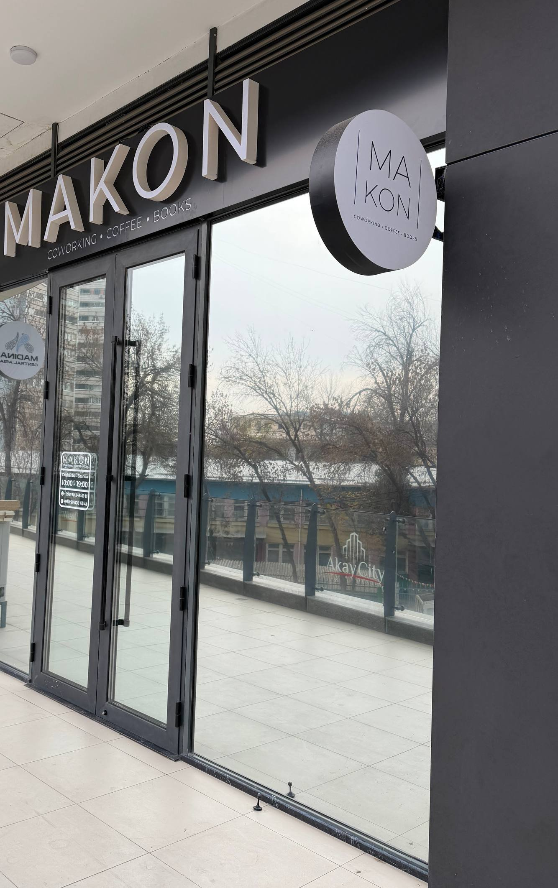
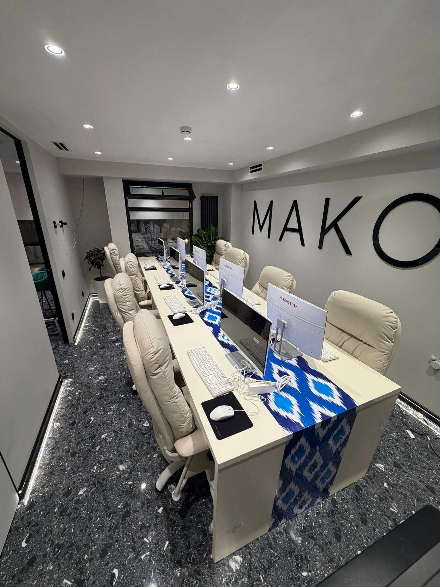

10:00
Sizning joyingiz kutib turibdi
Doimiy joyingiz va shaxsiy shkafingiz faqat sizniki.
Toshkent markazida, metrodan 2 daqiqada — o'z doimiy ish joyingiz, tinch muhit va o'z ishi bor qo'shnilar.
Makon — g'oyalar tug'iladigan maskan. Bu yerda, kofe hidi va kitob sahifalari orasida, katta ishlar boshlanadi. Siz o'z ishingizni qurasiz, intiluvchan insonlar bilan tanishasiz va birga o'sasiz.


O'z ishi bor va o'sishni xohlaydiganlar uchun.
Hamma narsa joyida. Siz faqat ishlaysiz.
Doimiy joyingiz va shaxsiy shkafingiz faqat sizniki.
Wi-Fi, bepul printer va jim muhit.
Kofe tanaffusida yangi tanishuvlar boshlanadi.
Makondan har kuni yaxshi taassurot bilan ketasiz.
Makon rezidenti bo'ling
Har bir rezidentga o'z doimiy joyi beriladi. Joylar soni cheklangan — 15 ta.
O'z ishi bor va qulay, tinch ish joyi kerak bo'lganlar uchun.
Turizmda yakka ishlayotgan, endi boshlayotgan yoki qiyin davrni boshidan kechirayotgan turagentlar uchun ayni muddao.
To'lov faqat QR orqali · Kurs a'zolikka kirmaydi
Ishingizni o'stirish uchun
Ijtimoiy tarmoqlaringizni yuritish.
Mijoz jalb qilish va reklama.
Video, podkast va boshqa ishlar uchun.
«Turizm va turagentlik kursi»
Makonda Madina Central Asia turagentligining kursi o'tadi. Rezidentlar ish joyidan chiqmasdan bilim oladi. Yangi boshlovchilar va sohada ishlayotganlar uchun.
Tanishuvdan boshlanadi
Forma orqali yoki telefon qiling.
Joyni o'z ko'zingiz bilan ko'ring.
Shartnoma, Makon qoidalari va pasport nusxasi.
QR orqali to'lov — joyingiz tayyor.
Ko'p so'raladigan savollar
Toshkent, Lashkarbegi ko'chasi, 11, Akai City turar-joy majmuasi. "Hamid Olimjon" metro bekatidan piyoda 2 daqiqa, parkovka bor.
Yakshanbadan tashqari har kuni, 10:00 dan 19:00 gacha.
Makon rezidentlari uchun — oyiga $250, turagentlar uchun — oyiga $350.
O'z doimiy ish joyingiz, kompyuterlar, Wi-Fi internet, bepul printer, bepul shaxsiy shkaf va rezidentlar uchun kitoblar.
Ha. Makonda rezidentlar uchun kompyuterlar bor, ular a'zolik narxiga kiradi.
Ha. Har bir rezidentga o'z doimiy ish joyi beriladi, Makonda jami 15 ta joy bor.
Rezidentlarning barcha imkoniyatlari, faoliyat uchun litsenziya, moliyaviy, huquqiy va tashkiliy xizmatlar hamda tayyor buyurtmalar. Ofis ochmasdan Makondan turib ishlaysiz.
O'z ishi bor va o'sishni xohlaydiganlar uchun: talabalar, targetologlar, frilanserlar, tadbirkorlar va turagentlar.
Faqat QR-kod (UzQR) orqali, bank ilovangizdan. Naqd pul qabul qilinmaydi.
Ha. Tashrifga yoziling yoki qo'ng'iroq qiling: +998 99 070 44 41 yoki +998 95 747 44 41
Kelib ko'ring. Farqini his qilasiz.

Yagona QR-kod (UzQR) orqali bank ilovangizdan to'lang. Naqd pul qabul qilinmaydi.
A'zolikni uzaytirish uchun to'lov muddat tugashidan kamida 1 kun oldin amalga oshiriladi.